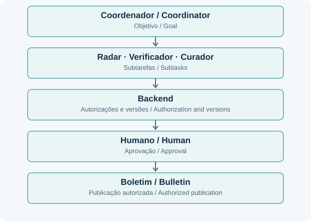

Lab 07 — Observar.IA — curadoria pelo WhatsApp
Lab 07 — Observar.IA — WhatsApp curation
Objetivo / Objective
Observar.IA — curadoria pelo WhatsApp com evidência reproduzível e controle de permissões.
Observar.IA — WhatsApp curation with reproducible evidence and permission controls.
Pré-requisitos / Prerequisites
Ambiente de laboratório isolado, dados sintéticos, Python 3 quando necessário e Hermes configurado (exceto Lab 01).
Isolated lab environment, synthetic data, Python 3 when needed and Hermes configured (except Lab 01).
Arquitetura / Architecture

Arquivos / Files
fontes.json · simular.py · test_backend.py · backend.py
Implementação passo a passo / Step by step
Passo / Step 1
Execute primeiro o backend simulado e os testes. Não exponha a API local nem entregue o segredo da ponte ao modelo.
Run the simulated backend and tests first. Do not expose the local API or give the bridge secret to the model.
python test_backend.py
python simular.pyPasso / Step 2
No WhatsApp de teste, peça ao Hermes que elabore um rascunho a partir de fontes sintéticas. O curador humano confere a fonte e o texto.
In test WhatsApp, ask Hermes for a draft from synthetic sources. Human curator checks source and text.
Prepare uma síntese da fonte fictícia; não publique nem aprove.Passo / Step 3
Simule a transferência manual do rascunho para o backend. Use identidades de teste definidas fora do LLM; reproduza revisão, aprovação, publicação e negação. Integração automática exige adaptador autenticado que derive remetente do evento real, ainda não fornecido.
Manually transfer the draft to backend simulation. Use test identities outside the LLM; reproduce review, approval, publication and denial. Automatic integration requires an authenticated adapter deriving sender from real events, not included.
FONTE https://hermes-agent.nousresearch.com/docs | comentário
SOLICITAR OBS-001 V1
RASCUNHO OBS-001 V1 | texto revisado
APROVAR OBS-001 V2
PUBLICAR OBS-001 V2Testes e avaliação / Tests and assessment
Publicação negada antes da aprovação; texto aprovado gera boletim local; bridge real não validada.
Publication denied before approval; approved text generates local bulletin; live bridge unvalidated.
Entregue versão, comandos, logs sem segredos, resultados observados e discussão de falhas. Avaliação: correção 40%, evidência 30%, segurança 20%, clareza 10%.
Submit version, commands, sanitized logs, observed results and failure discussion. Rubric: correctness 40%, evidence 30%, security 20%, clarity 10%.
Se falhar, verifique permissões, caminho, versão, credencial e conectividade; não amplie privilégios para contornar o problema.
On failure, check permissions, paths, version, credentials and connectivity; do not broaden privileges as a workaround.
Referências / References
Documentação oficial / Official docs · Todos os laboratórios / All labs